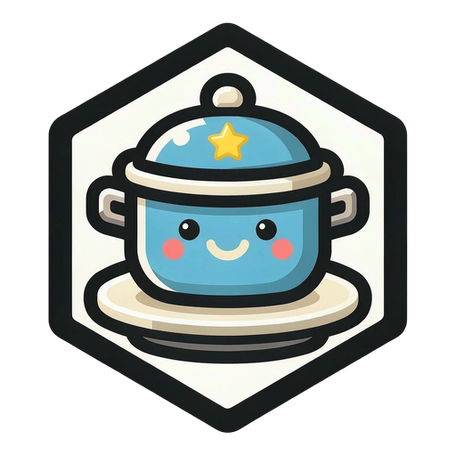

一款教你甩锅的爽游，和一堂教你接锅的课
锅不会消失，只会转移。
60 秒，看看你能把它推给谁。
离线模式 · 判定库 54 条 | 按 ` 打开开发者面板
锅悬在半空，读秒冻结 —— 世界等你回来。
甩锅事故处理卷宗
得分 0 · 心理阴影面积 0
开启后，抓住锅时发光的角色 = 这口锅真牵扯到的人（甩给 TA 最说得通）；变暗 = 场景不搭（仍可点）。玄学 / 自己类角色永不过滤。
暂停时背景音乐会自动降低，恢复后还原。
切换即时生效：背景 / 头像 / 图标 / logo / 特效全部随主题切换。